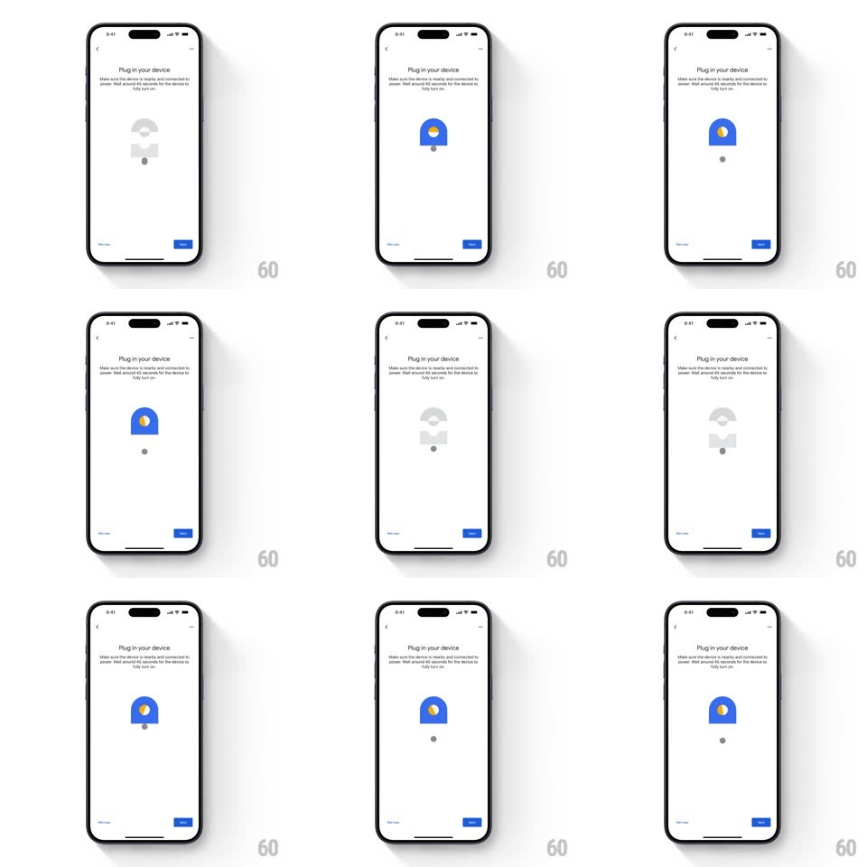

Media
Frame-by-frame

Rebuild this interaction 1:1: Google Home's "Plug in your device" illustration - a looping vector animation on the setup screen: a wall-plug icon cycles between a grey inactive state and a lit blue state with a glowing LED dot, pulsing to suggest the device powering on, above the "Make sure the device is nearby and connected to power" copy.

Rebuild this interaction 1:1: Google Home's "Plug in your device" illustration - a looping vector animation on the setup screen: a wall-plug icon cycles between a grey inactive state and a lit blue state with a glowing LED dot, pulsing to suggest the device powering on, above the "Make sure the device is nearby and connected to power" copy. ## Integration Integration: stack-agnostic spec - springs given as stiffness/damping, timed motions as duration + curve; map every value to your framework and animation library of choice. ## Scene White setup page: back arrow, "Plug in your device" headline, instructional subcopy, centered illustration (a rounded blue arch/plug shape with an LED indicator and a small base dot), progress bar and blue Next button bottom. ## Motion spec Pattern: looping two-state power pulse. - The illustration cycles ~2.5s: grey dim state -> blue lit state -> hold -> back to grey. - On the "on" beat: the plug body fills blue (fill crossfade 300ms), the LED window lights amber/yellow (opacity 0.2 -> 1, 200ms, 100ms after the fill), and a soft glow halo blooms behind the shape (opacity 0 -> 0.4, scale 0.9 -> 1.1, 400ms). - Hold lit for ~900ms, then reverse to grey on the same timings. - The small base dot bounces once when the light comes on (translateY -6px spring ~400/20, 350ms). ## Calibration - The blue fill and amber LED are staggered - body first, LED second, glow last. - Grey state is ~10% opacity outline, clearly "off" against the white page. ## Reduced motion Static lit illustration; the progress bar alone indicates activity. ## Don't miss - The LED reads amber/warm against the cool blue body - keep the hue contrast. - The loop is calm and symmetrical - no easing spikes between states.